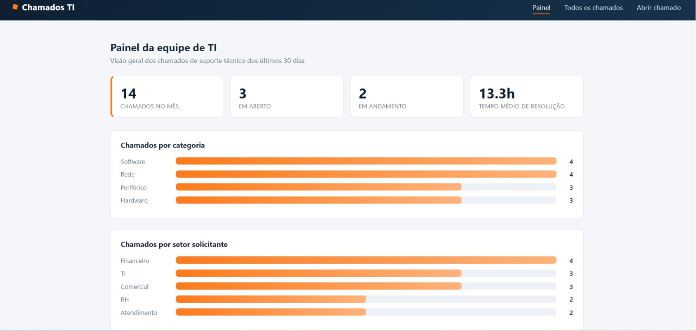
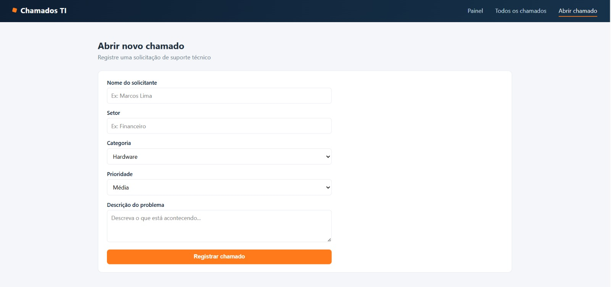
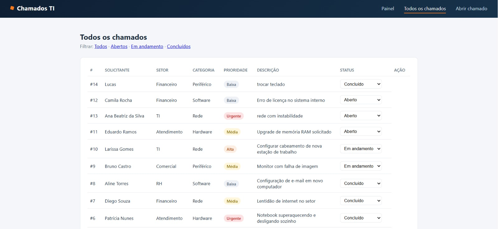

Uma prévia do sistema que desenvolvi para simular a rotina de uma equipe de suporte técnico: abertura de chamados, acompanhamento de status e um painel com estatísticas reais de atendimento.
Projeto pessoal · PHP · Suporte técnicoEsse sistema foi pensado em como uma equipe de TI organiza, na prática, o suporte técnico do dia a dia.
Navegação real pelo sistema: painel de estatísticas, listagem de chamados e abertura de um novo chamado.


